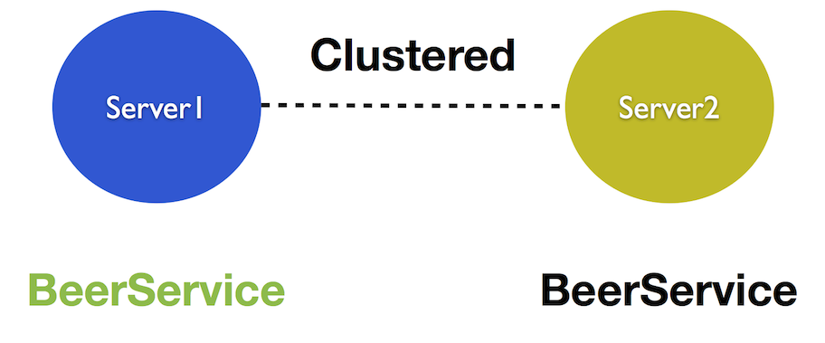
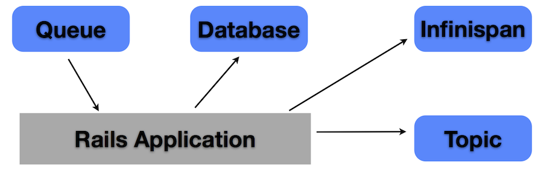

@abstractj

DISCLAIMER
Java

927 JSRs apenas :)
>Expressiva?
import java.util.Calendar;
public class Beer {
private Long beerId;
private String description;
private Calendar createdAt;
public Long getBeerId() {
return beerId;
}
public void setBeerId(Long beerId) {
this.beerId = beerId;
}
public String getDescription() {
return description;
}
public void setDescription(String description) {
this.description = description;
}
public Calendar getCreatedAt() {
return createdAt;
}
public void setCreatedAt(Calendar createdAt) {
this.createdAt = createdAt;
}
}
Enterprise
WAR JAX-RPC Struts Spring JAAS EJB JNI EAR SOA JPQL CDI GWT JAX-WS JSF JavaFX JNDI RMI JMX JAXP JAXB JDO JAX-RS JAXR JSTL StAX JAF JDOM AWT Swing JEE JSE JCP JVM JME NIO JSP JRE POJO JavaBean EJBQL

Mas escala né?

JVM
Scala
Jython
Clojure
DynJS
Rhino
Groovy
Ruby
class Beer
attr_accessor :beer_id, :description, :created_at
end
DRY

It is tempting, if the only tool you have is a hammer, to treat everything as if it were a nail - Abraham Maslow
JRuby
Java + Ruby on Steroids
JRuby
require 'java'
pdf = com.itextpdf.text.Document.new
para = com.itextpdf.text.Paragraph.new 'Brought to you by JRuby'
file = java.io.FileOutputStream.new 'pdf_demo.pdf'
com.itextpdf.text.pdf.PdfWriter.get_instance pdf, file
pdf.open
pdf.add para
pdf.close
You get true multithreading that can use all your computer’s cores from one process, plus a virtual machine that’s been tuned for a decade and a half.
Using JRuby - Bringing Ruby to Java
Server Side
Ruby App
Ruby App
Ruby App
Ruby App
JBoss
Web
JBoss
HornetQ
JBoss
Scheduling
JBoss
Clustering
AS7
Redução do footprint de memória
Class loader modular
Queda no tempo de startup
EE6 compliant
TorqueBox
The power of JBoss with the expressiveness of Ruby Jim Crossley - MagicRuby Conference
TorqueBox
Instalação
TorqueBox do zero
Pré-requisitos
➜ java -version
java version "1.6.0_07"
Java(TM) SE Runtime Environment (build 1.6.0_07-b06-153)
Java HotSpot(TM) 64-Bit Server VM (build 1.6.0_07-b06-57)
GEM
➜ jruby -S gem install torquebox torquebox-capistrano-support
Download
➜ wget http://torquebox.org/release/org/torquebox/torquebox-dist/2.0.3/torquebox-dist-2.0.3-bin.zip
➜ unzip torquebox-dist-2.0.3-bin.zip
➜ export TORQUEBOX_HOME=$PWD/torquebox-dist-2.0.3
➜ export JBOSS_HOME=$TORQUEBOX_HOME/jboss
➜ export JRUBY_HOME=$TORQUEBOX_HOME/jruby
➜ export PATH=$JRUBY_HOME/bin:$PATH
Rails
rails new beer -m $TORQUEBOX_HOME/share/rails/template.rb
Estrutura
Rake tasks
rake torquebox:deploy
rake torquebox:undeploy
rake torquebox:run
Deployment
Make knobs, not WAR!
beer-knob.yml
application:
root: /Users/Bruno/gurusorocaba/beer
environment: development
Aplicação
Gemfile
source 'http://rubygems.org'
gem 'rails', '3.1.1'
gem 'activerecord-jdbcsqlite3-adapter'
gem 'jruby-openssl'
gem 'json'
gem 'jquery-rails'
gem 'torquebox-rake-support', '2.0.3'
gem 'torquebox', '2.0.3'
Web
Rack, Sinatra, Rails
Caching
class BeersController < ApplicationController
caches_action :most_popular, :expires_in => 30.seconds
def most_popular
@popular_beers = Beer.most_popular(:limit => 25)
end
end
Clustering
➜ torquebox run --clustered
Internals
class TorqueBoxCommand < Thor
map "run" => "start"
method_option :clustered, :type => :boolean,
def start
setup_environment
TorqueBox::DeployUtils.run_server(:clustered => options.clustered,
:max_threads => options['max-threads'],
:bind_address => options['bind-address'])
end
end
Cache distribuído!
mod_cluster
httpd-based load balancer
Infinispan
Caching
Invalidation
Invalidation
../application.rb
module Beer
class Application < Rails::Application
config.cache_store = :torque_box_store
end
end
Replicated
../application.rb
module Beer
class Application < Rails::Application
config.cache_store = :torque_box_store, {:mode => replicated,
:sync =>false
Scheduling
Agendamento de Jobs
Internals
Ruby ruby = null;
try {
ruby = this.runtimePool.borrowRuntime( resolver.getComponentName());
JobComponent job = (JobComponent)resolver.resolve( ruby );
job.run();
} catch (Exception e) {
throw new JobExecutionException( e );
} finally {
if (ruby != null) {
this.runtimePool.returnRuntime( ruby );
}
}
Internals
Ruby ruby = null;
try {
ruby = this.runtimePool.borrowRuntime( resolver.getComponentName() );
JobComponent job = (JobComponent)resolver.resolve( ruby );
job.run(); //chamada do metodo no Ruby
} catch (Exception e) {
throw new JobExecutionException( e );
} finally {
if (ruby != null) {
this.runtimePool.returnRuntime( ruby );
}
}
../app/jobs
class JobDemo
def initialize
#Codigo de inicializacao
end
def run
# O que você quer executar
end
end
../torquebox.yml
jobs:
sync_agenda:
job: JobDemo
cron: '0 0 12 * * ?'
end
Mensageria
Java Messaging Service + HornetQ
O Ministério da Saúde adverte:
NOSQL COMO MENSAGERIA PODE TRAZER DANOS A SUA SAÚDE E A DE SEUS FAMILIARES
Greenfield
REST + NoSQL
Real World
../torquebox.yml
/topics/beerTopic
/queues/queueBeer:
Tasks
class EmailerTask < TorqueBox::Messaging::Task
def send_welcome(payload)
to = "#{payload[:name]} <#{payload[:address]}>"
# send welcome email to the user
end
end
Tasks
class UserController < ApplicationController
def register
user = User.new(params[:user])
EmailerTask.async(:send_welcome, :address => user.email,
:name => user.name)
end
end
Processors
include TorqueBox::Messaging
class PrintHandler < MessageProcessor
def on_message(body)
puts "Processing #{body} of #{message}"
end
def configure(opts)
@color = opts['color']
end
end
Queues
include TorqueBox
req = Messaging::Queue.new '/queues/questions'
res = Messaging::Queue.new '/queues/answers'
Thread.new do
req.publish "What time is it?"
puts res.receive( :timeout => 1000 )
end
Future
Future
class EmailerTask
def send_welcome(payload)
to = "#{payload[:name]} <#{payload[:address]}>"
# long running task
end
end
Future
class EmailerTask
include TorqueBox::Messaging::Backgroundable
always_background :send_welcome
def send_welcome(payload)
to = "#{payload[:name]} <#{payload[:address]}>"
# long running task
end
end
Future
future = @emailTask.send_welcome(:send_welcome)
future.started?
future.complete?
future.error?
future.result
future.result(10000)
Services
Services
class BeerService
def initialize
@queue = Messaging::Queue.new(“beer”)
end
def start
@queue.publish “Testing”
end
def stop
# O que fazer quando o serviço receber um stop
end
end
Singleton Services
Singleton Services
Services
➜ torquebox run --clustered
torquebox.yml
services:
BeerService:
singleton: true
end
CDI
Injeção de dependências
Pra quê?
Java
package br.com.gurusorocaba;
@ApplicationScoped
public class Beer {
//gets e sets
public void say(String message) { // Execução do método
Deploy do jar na aplicação
app/
lib/beer.jar
models/
views/
controllers/
Ruby
class BeerController < ApplicationController
include TorqueBox::Injectors
def create
beer = inject( Java::br.com.gurusorocaba.Beer )
beer.say “Ruby is for Java”
end
end
JNDI
class MyService
include TorqueBox::Injectors
def initialize opts={}
@factory = inject("java:comp/env/jdbc/myDB")
end
end
Destinations
class MyService
include TorqueBox::Injectors
def initialize opts={}
@inbound = inject("/topic/beerpub")
@outbound = inject("/queue/beer")
end
end
Transactions

XA Distributed, multi resource transaction
XA (2PC)
- HornetQ ✔
- Infinispan ✔
- TorqueBox + ActiveRecord ✔
Autenticação
JAAS
Autenticação
torquebox.yml ou auth.yml
auth:
default:
domain: torquebox
credentials:
teste: testepassword
Autenticação
require 'torquebox'
require 'torquebox-security'
class LoginController < ApplicationController
def create
usuario = params[:usuario]
senha = params[:senha]
redirect_to login_path if usuario.blank? || senha.blank?
authenticator = TorqueBox::Authentication.default
if authenticator.authenticate(usuario, senha)
puts "Autenticado com sucesso"
redirect_to contatos_path
else
mensagem = "Nao autorizado"
redirect_to login_path
end
end
end
Outras features
Autenticação + Websockets
BackStage